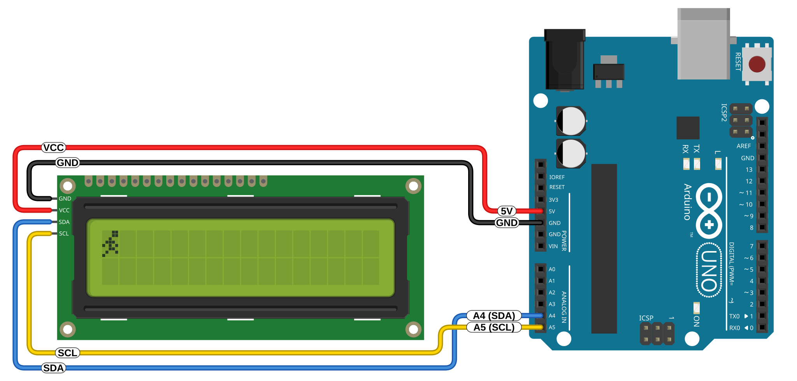
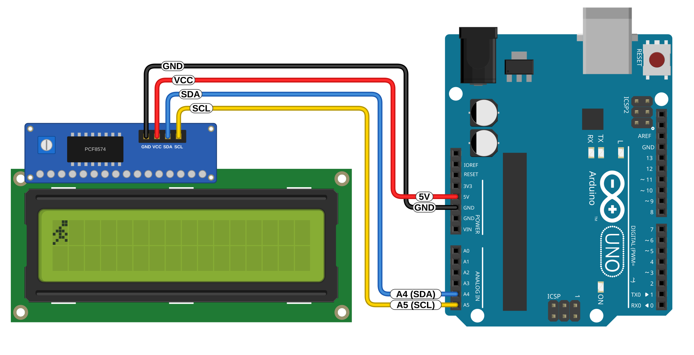
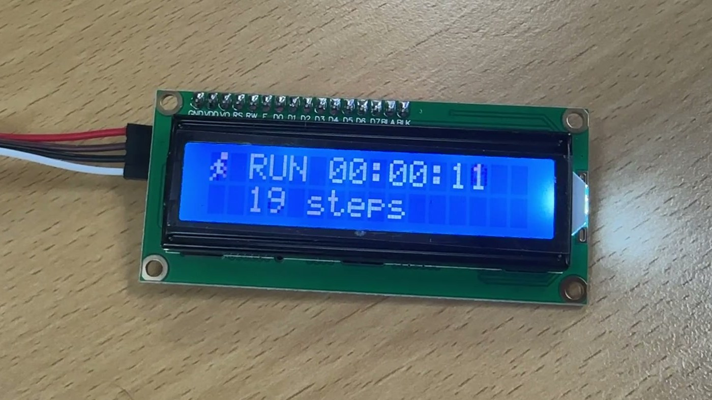

01과제
요구 사항
- LCD16x02의 첫째 줄 첫 글자로 아두이노가 동작 중임을 나타내는 캐릭터 모션을 만든다.
- Custom Character를 쓴다.
- 동작이 부드러워야 한다.
- 동작 중임을 직관적으로 알 수 있어야 한다.
이 글의 순서
아이디어 → 캐릭터 설계 → 브라우저 시뮬레이션 → 연결도 → 스케치 → 동작 원리 → 검증 → 실제 동작 → 고찰. 시뮬레이션은 스케치와 같은 그림 데이터와 같은 타이밍 규칙으로 움직인다.
02아이디어: '동작 중'을 '달리는 중'으로
'동작 중'은 영어로 running이다. 그래서 첫 칸의 캐릭터를 달리는 사람으로 정했다. 사람이 달리고 있으면 돌아가는 중이고, 멈춰 서 있으면 멈춘 것이다. 설명 없이도 누구나 이렇게 읽는다.
실제 장비에도 같은 목적의 장치가 있다. 공유기나 제어 보드는 하트비트(heartbeat) LED를 일정한 박자로 깜빡여서 펌웨어가 살아 있음을 알린다. 이 과제는 그 LED를 LCD 한 칸짜리 캐릭터로 옮긴 것이다. 단순한 깜빡임보다 '움직이는 중'과 '멈춤'의 차이가 훨씬 분명하다.
멈추면 같이 멈춘다
캐릭터를 그리는 코드가 메인 루프의 스케줄러 안에서 돈다. 프로그램이 어딘가에 갇히면 그림도 그 장면에서 멈춘다. 타이머 인터럽트로 그리면 메인 프로그램이 멈춰도 계속 달릴 수 있어서 일부러 쓰지 않았다.
켜지면 천천히 출발한다
전원을 넣거나 리셋하면 300 ms 간격으로 천천히 시작해 약 2초 만에 120 ms 간격으로 달린다. 그래서 아두이노가 막 다시 시작됐다는 것도 화면에서 보인다.
나머지 칸에는 기록
오른쪽에는 가동 시간을, 둘째 줄에는 걸음 수를 쓴다. 걸음 수는 캐릭터가 동작 4장을 한 바퀴 돌 때마다 1씩 오른다. 숫자가 같이 올라가니 '계속 달리고 있다'가 한 번 더 확인된다.
03캐릭터 설계: 점 40개로 달리기
LCD의 한 칸은 가로 5점, 세로 8점이다. 이 안에서 달리기를 알아보게 하려고 세 가지를 정했다.
- 머리를 오른쪽 위에 둔다. 2×2 머리를 오른쪽 위에 붙이고 목을 왼쪽 아래로 이었다. 머리가 몸보다 앞에 있어서 몸이 앞으로 기운 자세가 되고, 달리는 방향이 오른쪽으로 보인다.
- 달리기 한 걸음을 네 장면으로 나눈다. 착지 → 무게 싣기 → 다리 교차 → 차고 나가기. 사람 달리기를 그릴 때 쓰는 기본 장면들이다. 중간 장면을 더 넣는 방법도 검토했다. 하지만 5×8에서는 중간 장면이 앞뒤 장면과 한두 점밖에 달라지지 않아서, 장면 차이가 분명한 네 장만 쓰기로 했다.
- 위아래로 출렁이게 한다. 무게 싣기 장면에서만 몸 전체를 한 칸 내렸다. 달릴 때 머리가 오르내리는 움직임이라, 네 장면만으로도 몸이 살아 있는 느낌이 난다.
각 장면은 8바이트다. 한 바이트가 한 줄이고, 아래 5비트가 왼쪽부터 다섯 점이다(1이 켜진 점). 아래 시뮬레이션이 돌아가는 동안에는 지금 보이는 장면에 파란 테두리가 표시된다.
04브라우저 시뮬레이션
스케치의 POSES 데이터와 타이밍 규칙(320 ms에서 시작해 실행마다 20 ms씩 줄여 120 ms까지)을 그대로 옮겼다. 'Arduino 멈추기'를 누르면 프로그램이 멈췄을 때 화면이 어떻게 보이는지 볼 수 있다.
LCD 16x2 · I2C
글자 모양은 HD44780 내장 글꼴을 따랐다
'액정 잔상 흉내'는 점의 밝기가 바로 바뀌지 않고 시간상수 70 ms로 서서히 따라가도록 그린 것이다. 실제 LCD의 반응 시간을 잰 값이 아니라 어림값이다. 프레임 간격을 60 ms로 바꾸고 켜 보면 간격이 너무 짧을 때 동작이 어떻게 번지는지 볼 수 있다.
05회로와 연결도
LCD 뒷면에 붙은 I2C 모듈이 LCD의 16핀 연결을 두 가닥(SDA·SCL) 통신으로 바꿔 준다. 그래서 전원 두 가닥을 더해 선 4개면 된다. Arduino Uno에서 I2C 핀은 A4(SDA)와 A5(SCL)이다.



I2C 모듈 모양까지 그린 연결도 보기

핀 연결
| I2C 모듈 | Arduino Uno |
|---|---|
| GND | GND |
| VCC | 5V |
| SDA | A4 |
| SCL | A5 |
준비물과 확인할 것
- Arduino Uno 1개, I2C 모듈이 붙은 16x2 LCD 1개, 암-수 점퍼선 4개
- 라이브러리: LiquidCrystal I2C 1.1.2(Frank de Brabander), TaskScheduler 4.1.0
화면이 비거나 네모만 보이면 모듈 뒤 파란 가변저항(명암)을 돌린다. 글자가 계속 안 나오면 I2C 주소가 다를 수 있다(보통 0x27, 칩에 따라 0x3F). 스케치가 시작할 때 0x27에서 응답이 없으면, 응답한 주소를 시리얼 모니터(115200)에 알려 준다.
I2C 모듈 안에서 일어나는 일 보기
LCD 제어 칩(HD44780)은 데이터 선 4개(D4~D7)로 1바이트를 반씩 두 번에 받는다. I2C 모듈은 Arduino가 보낸 1바이트를 그대로 출력 핀 8개에 내보내는 칩(PCF8574)이고, 라이브러리가 P2(E) 핀을 켰다 끄는 방식으로 LCD에 반 바이트씩 넣는다. 핀 배치는 라이브러리 소스의 Rs·Rw·En·LCD_BACKLIGHT 정의에서 확인했다.
06스케치
캐릭터 네 장(POSES)을 LCD에 미리 올려 두고, TaskScheduler 작업 하나(tPose)가 박자에 맞춰 첫 칸의 글자 번호만 바꾼다.
// Shows a running figure in the LCD's first cell for as long as the Arduino keeps running.
#include <Wire.h>
#include <LiquidCrystal_I2C.h>
#include <TaskScheduler.h>
const byte LCD_ADDR = 0x27;
const unsigned long START_MS = 320, FRAME_MS = 120, SPEEDUP_MS = 20;
byte POSES[4][8] = {
{0b00011, 0b00011, 0b00100, 0b01110, 0b10101, 0b00110, 0b01001, 0b10000},
{0b00000, 0b00011, 0b00011, 0b00100, 0b01110, 0b10100, 0b01100, 0b00100},
{0b00011, 0b00011, 0b00100, 0b00110, 0b01100, 0b00110, 0b00100, 0b00100},
{0b00011, 0b00011, 0b00100, 0b01111, 0b10100, 0b00111, 0b01000, 0b10000},
};
LiquidCrystal_I2C lcd(LCD_ADDR, 16, 2);
Scheduler runner;
byte pose = 0;
unsigned long steps = 0;
void nextPose();
Task tPose(START_MS, TASK_FOREVER, &nextPose, &runner, true);
void showStatus() {
unsigned long s = millis() / 1000;
char line[15];
snprintf(line, sizeof line, "RUN %02lu:%02lu:%02lu", s / 3600, s / 60 % 60, s % 60);
lcd.setCursor(2, 0);
lcd.print(line);
snprintf(line, sizeof line, "%lu steps", steps);
lcd.setCursor(2, 1);
lcd.print(line);
}
void nextPose() {
if (tPose.getInterval() > FRAME_MS) tPose.setInterval(tPose.getInterval() - SPEEDUP_MS);
lcd.setCursor(0, 0);
lcd.write(pose);
pose = (pose + 1) % 4;
if (pose == 0) {
steps++;
showStatus();
}
}
void setup() {
Serial.begin(115200);
Wire.begin();
Wire.beginTransmission(LCD_ADDR);
if (Wire.endTransmission() != 0) {
for (byte a = 1; a < 127; a++) {
Wire.beginTransmission(a);
if (Wire.endTransmission() == 0) {
Serial.print(F("LCD_ADDR을 0x"));
Serial.print(a, HEX);
Serial.println(F("로 바꾸세요"));
}
}
}
lcd.init();
lcd.backlight();
for (byte i = 0; i < 4; i++) lcd.createChar(i, POSES[i]);
lcd.clear();
showStatus();
}
void loop() { runner.execute(); }07동작 원리
1. 캐릭터 네 장을 CGRAM에 올린다
LCD 제어 칩에는 사용자 글자를 담는 CGRAM이 8칸(0~7번) 있다. setup()에서 lcd.createChar(i, POSES[i])로 네 장을 0~3번 칸에 넣는다. 이 칸들은 글자 번호 0~3으로 화면에 찍을 수 있다.
2. 그릴 때는 글자 번호만 바꾼다
매 프레임 setCursor(0, 0) 다음 write(pose)로 첫 칸에 0 → 1 → 2 → 3 번호를 돌아가며 쓴다. 그림 자체는 이미 LCD 안에 있으니 한 프레임에 보내는 양은 2바이트뿐이다.
3. 간격을 줄여 가며 출발한다
tPose는 간격 320 ms로 시작한다. 실행될 때마다 맨 앞에서 setInterval()로 20 ms씩 줄이므로 300, 280, … 140, 120 ms가 되고, 그 뒤로는 120 ms를 유지한다. TaskScheduler는 setInterval()이 불린 순간부터 다음 실행까지를 잰다. 그래서 LCD에 쓰기 전, 콜백 맨 앞에서 불러야 전송 시간만큼 간격이 늘어나지 않는다.
4. 한 걸음마다 기록을 고친다
장면 번호가 3에서 0으로 돌아올 때 steps를 1 올리고 showStatus()로 가동 시간과 걸음 수를 다시 쓴다. 120 ms × 4장 = 0.48초에 한 걸음, 분당 125걸음이다. 기록은 프레임을 그린 직후에 쓰므로 다음 프레임과 겹치지 않는다(→ 08 검증, 10 고찰).
주의할 점. createChar()가 끝나면 LCD의 쓰기 주소가 CGRAM을 가리킨 채로 남는다. 이 상태에서 바로 글자를 쓰면 화면이 아니라 사용자 글자 칸에 써진다. 이 스케치는 createChar() 다음에 clear()를 부르고, 모든 출력 앞에 setCursor()를 두어 주소를 다시 화면(DDRAM)으로 잡는다.
08검증
Arduino Uno 컴파일
Arduino IDE의 arduino-cli(AVR 코어 1.8.8, LiquidCrystal I2C 1.1.2, TaskScheduler 4.1.0)로 Uno 대상 컴파일에 성공했다. 프로그램 저장 공간 9,426바이트(29%), 전역 변수 591바이트(28%)다.
PC에서 LCD 모델로 65초 실행
스케치와 TaskScheduler 소스를 PC에서 그대로 컴파일했다. LCD는 HD44780의 DDRAM·CGRAM·쓰기 주소 동작을 흉내 낸 모델로 바꿨다. 1바이트 전송마다 1.48 ms(아래 고찰의 계산값)가 걸리게 하고 65초 동안 돌렸다. 실제 보드는 켜질 때마다 준비 시간이 조금씩 다르므로, 시작 지연을 0~110 ms에서 10 ms 간격으로 12가지로 바꿔 모두 확인했다.
| 확인한 내용 | 결과 (12가지 시작 지연) |
|---|---|
| CGRAM 0~3번에 네 장면이 그대로 들어 있다 | 12 / 12 통과 |
| 첫 칸이 0 → 1 → 2 → 3 → 0 순서로만 바뀐다 | 12 / 12 통과 |
| 출발 간격이 300, 280, … 140 ms로 줄어든 뒤 120 ms | 12 / 12 통과 (오차 1 ms 이내) |
| 달리는 동안 프레임 간격이 120 ms ± 2 ms | 12 / 12 통과 (최대 오차 0.0 ms) |
| 걸음 수 = 네 장면을 한 바퀴 돈 횟수 | 12 / 12 통과 |
윗줄 RUN 00:01:05, 아랫줄 걸음 수가 갱신 시점 값과 같다 | 12 / 12 통과 |
처음 구조와 비교
처음에는 가동 시간과 걸음 수를 1초마다 따로 쓰는 작업(tStatus)을 하나 더 두었다. 같은 모델에서 돌려 보니 기록을 쓰는 약 34 ms 동안 그다음 프레임이 기다리느라 늦어지는 경우가 있었다. 그래서 기록 쓰기를 프레임 바로 뒤로 옮겼다.
| 구조 | 프레임이 늦어진 최대 시간 | 늦어짐이 생긴 경우 |
|---|---|---|
| 작업 2개 (기록은 1초마다 따로) | 29.1 ms | 12가지 중 9가지 (9.1 ~ 29.1 ms) |
| 작업 1개 (기록은 걸음마다 프레임 직후, 최종) | 0.0 ms | 12가지 중 0가지 |
이 검사는 실제 LCD의 화면을 본 것은 아니다. 1바이트 1.48 ms도 라이브러리 코드에서 계산한 어림값이다. 실제 화면에서 어떻게 보이는지는 아래 동작 사진과 영상으로 확인한다. 검사 코드: tools/lcdsim
09실제 동작

실제 회로의 사진과 영상은 촬영 후 이 자리에 올린다.
10고찰
1. 부드러움은 장면 수보다 박자에서 나온다
점 40개짜리 칸에서는 장면을 늘려도 중간 장면이 앞뒤와 거의 같아서 부드러워지지 않는다. 대신 장면 차이가 분명한 네 장을 일정한 박자로 돌리고, 무게 싣기 장면에서 몸을 한 칸 내려 출렁임을 넣었다. 박자가 흔들리면 같은 그림도 덜컥거려 보인다. 그래서 프레임 간격이 정확히 120 ms로 유지되는지를 검증의 중심에 두었다.
2. 액정 반응 시간과 프레임 간격
LCD의 액정은 전압이 바뀐 뒤 점의 밝기가 다 바뀌기까지 시간이 걸리고, 추울수록 더 느려진다. 프레임 간격이 너무 짧으면 앞 장면이 다 사라지기 전에 다음 장면이 겹쳐 사람이 번져 보인다. 너무 길면 장면이 하나씩 끊어져 보인다. 120 ms는 이 둘 사이에서 고른 값이다. 시뮬레이션의 '액정 잔상 흉내'에서 60·120·240 ms를 비교할 수 있다.
실제 영상(초당 60장)을 한 장씩 넘겨 보면, 장면이 바뀔 때 앞 장면의 점이 몇 장에 걸쳐 흐리게 남았다가 사라진다. 09의 사진에서 초 자리 숫자가 덜 바뀐 채 찍힌 것도 같은 현상이다. 그래도 120 ms 간격에서는 한 장면이 다 그려진 뒤 잠시 또렷하게 머물러서 달리는 사람으로 읽힌다. 09의 사진도 달리는 중의 영상에서 뽑은 한 장이다.
3. I2C는 생각보다 느리다
LiquidCrystal_I2C는 LCD에 1바이트를 보낼 때 반 바이트씩 두 번 보낸다. 반 바이트마다 PCF8574에 3번 쓰고(데이터, E 켜기, E 끄기) 51 µs를 기다린다. I2C 한 번은 100 kHz에서 주소·데이터 18비트와 시작·끝 신호에 라이브러리 처리까지 약 0.23 ms다. 그래서 1바이트에 약 2 × (3 × 0.23 + 0.05) ≈ 1.48 ms가 든다. 첫 칸 한 프레임(2바이트)은 약 3 ms로 가볍다. 하지만 가동 시간과 걸음 수를 다시 쓰는 일은 약 23바이트, 34 ms다. TaskScheduler는 한 작업이 끝나야 다음 작업을 실행하는 협력형이다. 그래서 기록 쓰기와 프레임 시각이 겹치면 프레임이 그만큼 늦는다. 기록을 프레임 직후로 옮긴 것이 이 문제의 해결이다.
4. CGRAM 8칸의 한계와 넘는 방법
사용자 글자는 8칸뿐이다. 장면이 8장을 넘으면 한 칸(예: 0번)을 매 프레임 createChar()로 다시 쓰는 방법이 있다. 화면에 이미 찍힌 0번 글자가 그 자리에서 바로 바뀐다. 대신 프레임마다 9바이트(약 13 ms)를 보내야 하고, 앞에서 말한 쓰기 주소 문제를 매번 챙겨야 한다. 이번처럼 네 장이면 미리 올려 두고 번호만 바꾸는 쪽(2바이트)이 4배 넘게 가볍다.
5. 이 표시기가 알려 주는 것과 못 알려 주는 것
달리는 사람은 '스케줄러가 돌고 있고 LCD 통신도 살아 있다'는 증거다. 프로그램이 delay()나 무한 루프에 오래 갇히면 사람이 멈춘다. 리셋되면 다시 천천히 출발하고 가동 시간이 0부터 다시 올라가서, 재시작했다는 것도 드러난다. 반대로 스케줄러는 잘 돌지만 센서 값 처리처럼 실제 일이 틀린 경우는 알려 주지 못한다. 실제 장비에서는 이런 표시기를 멈춤 시 자동으로 리셋하는 워치독 타이머와 함께 쓰는 것이 일반적이다.
6. 촬영 준비 중에 실제로 겪은 문제
한 번은 첫 칸에 사람 대신 가로줄 모양이 나오고, 스케치가 아무것도 쓰지 않는 칸(둘째 칸, 윗줄 끝)에 네모와 'R'이 남은 적이 있다. 가동 시간과 걸음 수는 정상으로 올라가고 있었다. 그래서 LCD로 가는 I2C 통신 일부가 깨져 엉뚱한 명령이나 글자가 들어간 것으로 추정한다. 캐릭터 모양(CGRAM)은 setup()에서 한 번만 보내기 때문에, 한 번 깨지면 리셋할 때까지 그대로 남는다. 다시 실행하자 정상으로 돌아왔다. 빈칸이 흐린 네모로 보인 것은 별개 문제로, 명암 가변저항을 낮춰 해결했다.
같은 일이 자주 생긴다면 두 가지로 스스로 복구하게 만들 수 있다. 하나는 매 프레임 0번 칸의 모양을 createChar()로 다시 보내는 것이고(프레임당 11바이트, 약 16 ms), 다른 하나는 한 걸음마다 두 줄 전체를 공백까지 다시 쓰는 것이다. PC 모델에 일부러 잘못된 데이터를 넣어 보니, 지금 스케치는 실제로 본 것과 같은 깨진 화면(둘째 칸 네모, 윗줄 끝 'R', 깨진 첫 칸)이 계속 남았고 이렇게 고친 스케치는 0.5초 안에 원래 화면으로 돌아왔다. 이번 과제에서는 실물에서 동작을 확인한 원래 스케치를 그대로 두었다. 이런 문제는 선을 단단히 꽂는 것이 먼저다.